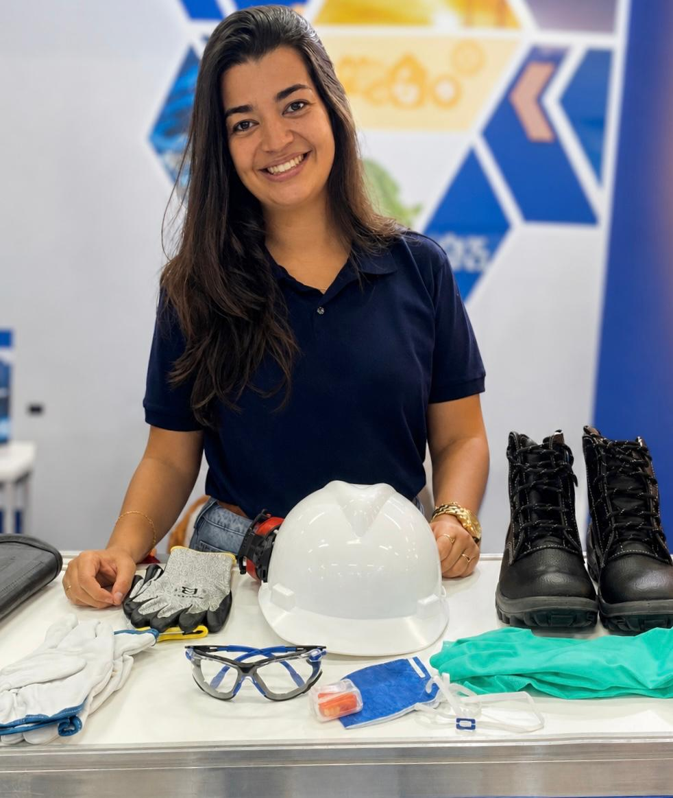

Pequenas e médias empresas
Adequação completa à NR-1 (PGR), NR-5 (CIPA), NR-6 (EPI) e eventos do eSocial. Você recebe só o que a sua operação realmente exige, sem pacote inflado.
- PGR + Inventário
- CIPA — eleição e treinamento
- Ficha de EPI
- eSocial SST
Engenharia de Seg. do Trab. · MG · Desde 2011
Consultoria técnica em SST: elaboração de PGR, LTCAT, OS, APR e demais documentos legais, gestão de SESMT e CIPA, treinamentos e eventos do eSocial — com responsável técnica que assina. Atendimento remoto em todo o Brasil e presencial em MG.
Para quem é
Se você tem funcionários registrados, a sua empresa precisa de documentação de SST. A pergunta não é “se” — é se ela está atualizada conforme as NRs e o eSocial.
Adequação completa à NR-1 (PGR), NR-5 (CIPA), NR-6 (EPI) e eventos do eSocial. Você recebe só o que a sua operação realmente exige, sem pacote inflado.
Organização documental para terceirizadas liberarem acesso em contratos com grandes contratantes — mineração, óleo & gás e construção pesada.
PGR detalhado, LTCAT, dimensionamento de SESMT e gestão contínua para fiscalização recorrente.
APR, integração de segurança, plano de emergência e adequação à NR-18 com responsável técnica habilitada.
O PGR está vencido, foi feito por modelo ou simplesmente não existe.
A NR-1 mudou (riscos psicossociais incluídos) e a sua documentação não foi revisada.
A CIPA precisa ser eleita, treinada e formalizada — e ninguém conduziu o processo.
O EPI é entregue, mas não há ficha de controle nem assinatura comprobatória.
O eSocial cobra eventos S-2210, S-2220 e S-2240 e ninguém sabe quem envia.
O contratante exige PGR, LTCAT e APR para liberar acesso — e o prazo era ontem.
O auditor fiscal do Trabalho marcou inspeção e a empresa está descoberta.
Cada item dessa lista é uma multa por funcionário exposto. O custo de adequar é, quase sempre, menor que o custo de uma única autuação.
Quero diagnóstico gratuitoServiços
Documentação interna obrigatória, gestão de SESMT e CIPA, treinamentos e — quando for o caso — mobilização para contratos. Você contrata só o que precisa.
Diferenciais
Do dimensionamento do SESMT ao DDS mensal, sem orquestrar três fornecedores diferentes.
Prazo combinado é prazo cumprido. Documentos em dias úteis, não em "quando for possível".
Acompanhamos as revisões das NRs (NR-1, NR-4, NR-5, NR-6, NR-18) e ajustamos os documentos conforme a regra atual.
Cada PGR, LTCAT e Inventário é elaborado a partir dos riscos reais da sua empresa. Documento copiado não passa em fiscalização e não defende ninguém.
Como funciona
sem custo
Conversa de 30 minutos para entender o porte, atividade, grau de risco e o que a sua empresa precisa: adequar a documentação interna, atender uma fiscalização, liberar um contrato ou tudo junto.
Você recebe um documento claro com o que será entregue, em quanto tempo e quem assina.
Coleta remota de dados, visita presencial quando o escopo exigir, entrega revisada e suporte para perguntas do cliente final ou da fiscalização.
Quem trabalhou comigo
"Estávamos com PGR e Inventário de Riscos vencidos e o eSocial cobrando eventos atrasados. Em três semanas a documentação foi refeita do zero, dentro da NR-1 atualizada, e os eventos passaram a sair no prazo."
"Tínhamos a CIPA pendente há dois anos e medo de fiscalização. Em seis semanas o processo eleitoral foi conduzido e os eleitos treinados — sem ruído com o RH."
"O eSocial estava com eventos SST atrasados e ninguém da equipe sabia mexer. Hoje os S-2210, S-2220 e S-2240 saem no prazo todo mês."
Sobre

Sou Fernanda G. Menezes Ferreira, Arquiteta e Urbanista e Engenheira de Segurança do Trabalho (CAU A309488-0). Atuo em SST desde 2011, dentro de operações reais de risco — não atrás de um manual. Minha trajetória passa por siderurgia, mineração, manutenção industrial e construção pesada, em empresas como Vallourec, VSB, Aura Minerals e Trimak Engenharia.
Desde novembro de 2025 atuo como consultora autônoma, atendendo empresas de diversos segmentos. O diferencial é simples: você fala diretamente com quem elabora e assina o seu documento, sem camadas de atendimento. A dupla formação me dá uma vantagem prática: leio um canteiro, um layout industrial e um plano de emergência com olhos de quem projetou o espaço, não só de quem auditou depois.
"Documentação de SST que funciona não é a que cumpre o papel. É a que reflete a operação real e protege a empresa quando o problema chega — porque o problema chega." — Fernanda Menezes
Trajetória profissional
nov/2025 — atual
Arquiteta e Eng. de Segurança do Trabalho · Atendimento direto
Belo Horizonte/MG · Brasil
set/2024 — out/2025
Engenheira de Segurança do Trabalho
Belo Horizonte/MG
jan/2024 — set/2024
Analista de Gestão de Riscos Sênior
Mato Grosso
jun/2023 — jan/2024
Técnica de Segurança do Trabalho Sênior · SSMA
Pontes e Lacerda/MT
set/2019 — mai/2023 · 3a 9m
Técnica em Segurança do Trabalho
Brumadinho/MG
jan/2018 — set/2019
Técnica em Segurança do Trabalho
Belo Horizonte/MG
set/2013 — set/2017 · 4a
TST · contrato Vallourec Tubos do Brasil
Belo Horizonte/MG
fev/2010 — jul/2013
Estagiária de Segurança do Trabalho
Belo Horizonte/MG
Setores onde atuei
Perguntas frequentes
O investimento depende do porte da empresa, número de funções, grau de risco e quantidade de documentos. Após o diagnóstico inicial enviamos uma proposta fechada — sem variável escondida e sem cobrança por hora. Para a maioria das pequenas e médias, o custo de adequação é menor do que uma única autuação fiscal das NRs envolvidas.
Documentos como APR, OS e ficha de EPI são entregues em poucos dias úteis. PGR, LTCAT e Inventário de Riscos costumam ficar prontos em 10 a 20 dias úteis a partir da coleta de dados. Quando o prazo é o serviço — caso típico de mobilização para liberar acesso — pactuamos um cronograma específico com você.
Não recomendamos. As multas das NRs (NR-1, NR-5, NR-6, NR-18) são aplicadas por item descumprido e por funcionário exposto — somam rápido. Além disso, o auditor fiscal define o prazo de adequação, e ele costuma ser mais curto do que o prazo de uma elaboração feita com calma.
Não. Cada PGR, LTCAT e Inventário é elaborado com base nos riscos reais da sua atividade, layout e quadro funcional. Documento genérico não passa em fiscalização federal e não atende exigência de contratante grande — fazemos o que defende a empresa de fato.
As NRs passam por revisões periódicas (a NR-1 mudou recentemente com a inclusão de riscos psicossociais, por exemplo). Avaliamos a vigência do seu documento atual gratuitamente e indicamos se precisa de revisão, complementação ou refazer integralmente.
Podemos elaborar a documentação e também operacionalizar o envio dos eventos S-2210, S-2220 e S-2240 — ou capacitar a sua equipe interna para fazer. Você escolhe o nível de envolvimento.
Sim. A maior parte da elaboração documental é remota e essa é justamente a razão pela qual conseguimos atender clientes em qualquer estado com agilidade. Quando o escopo exige medição em campo, levantamento de layout ou inspeção, fazemos visita presencial — combinada na proposta, sem surpresa.
Sim. Documentação e consultoria em formato remoto para todo o território nacional, com visitas presenciais em Minas Gerais e demais estados sob demanda quando o serviço exigir.
Diagnóstico técnico inicial sem custo
Em 30 minutos identificamos o que está em risco, o que precisa ser entregue primeiro e quanto vai custar para deixar a sua empresa em conformidade.
Fernanda G. Menezes Ferreira — Arquiteta e Urbanista · Engenheira de Segurança do Trabalho — CAU A309488-0 — +55 31 7168-0484